4 composiciones · SVG animado · sin escenas forzadas
El modelo elige las capas, los trazos, la tipografía y el tiempo. La herramienta solo aporta la paleta del estilo, los pinceles, el reloj de animación y el sistema de assets. Estas cuatro piezas no comparten una plantilla.



